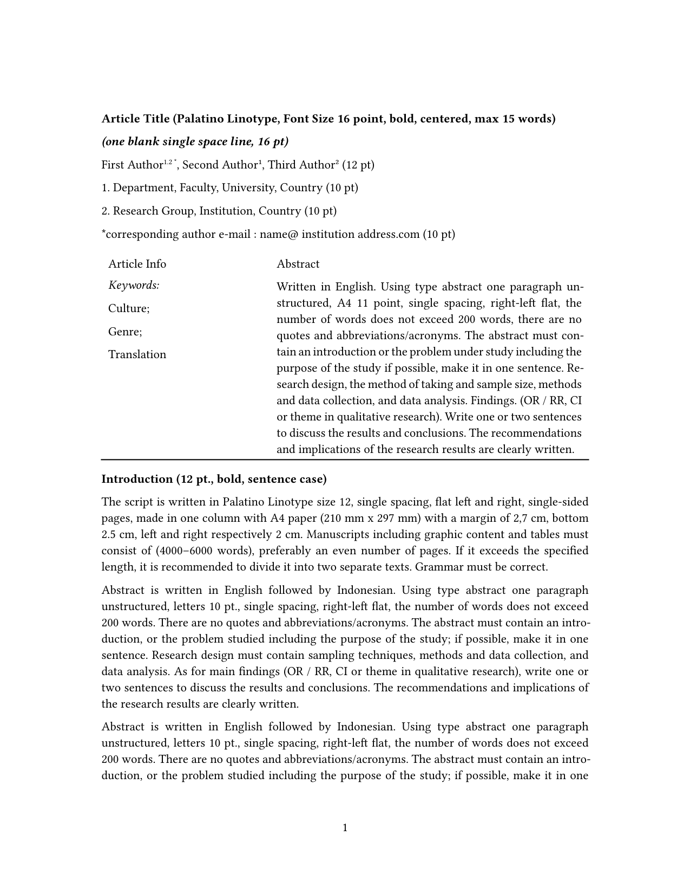
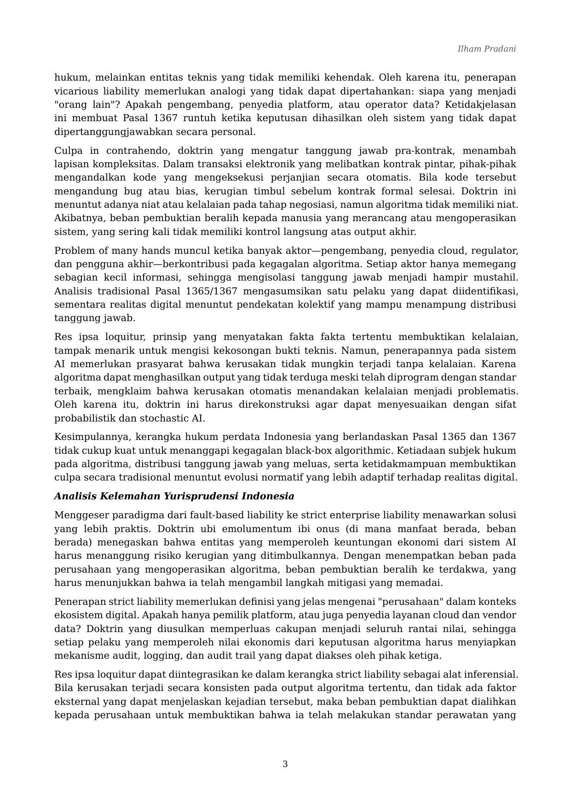
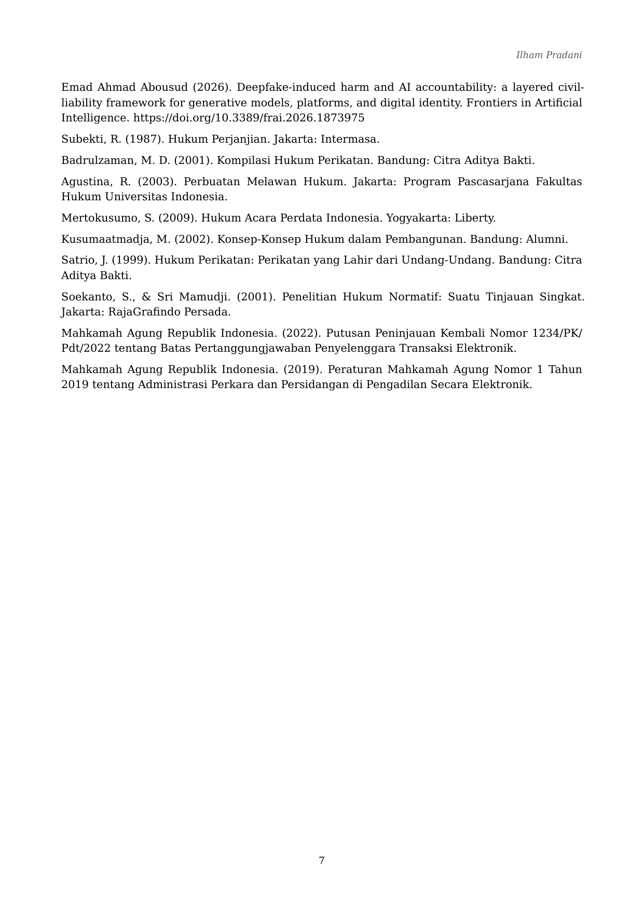

Halaman ini menampilkan tangkapan visual halaman dokumen asli yang dirender langsung dari berkas master Google Drive dan naskah hasil generasi, membuktikan integritas 100% tata letak tanpa simulasi HTML palsu.





